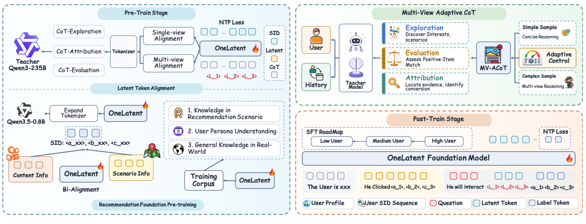
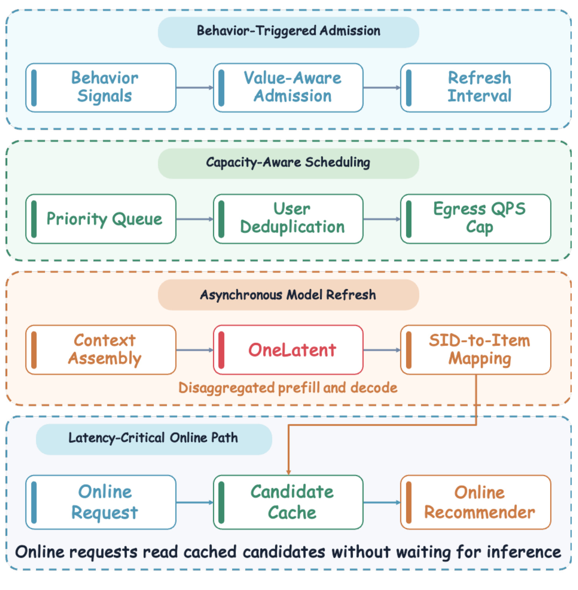
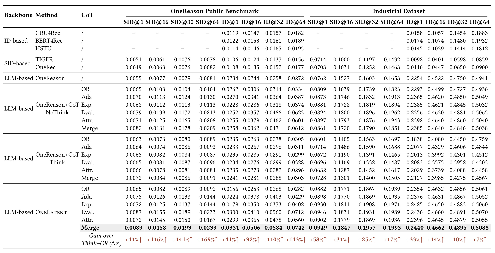
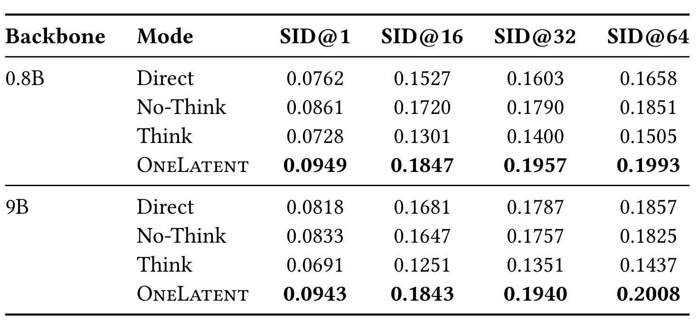
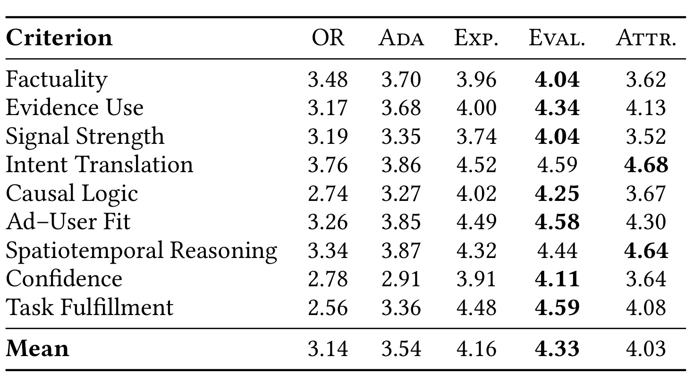
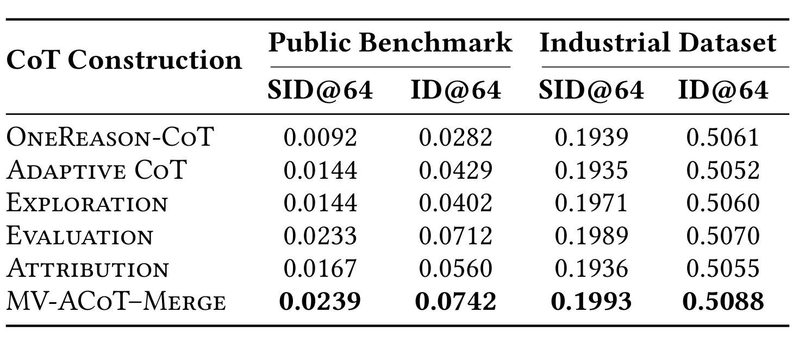
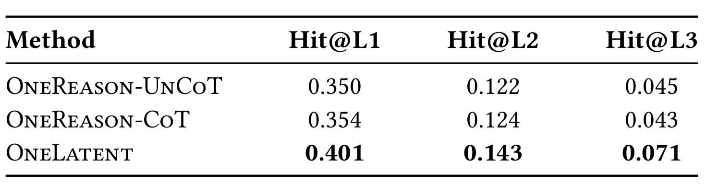
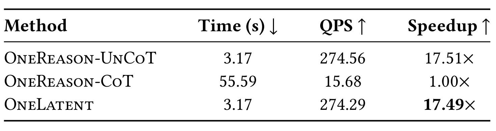
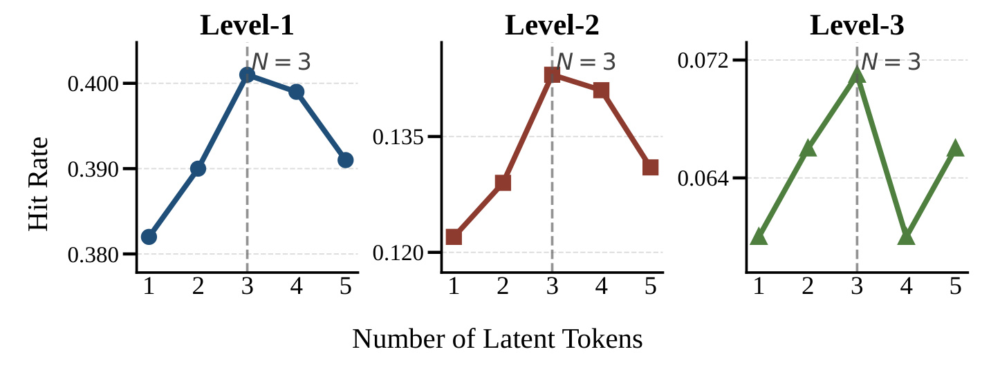
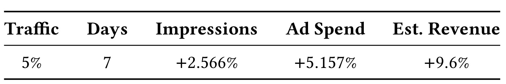

OneLatent：把显式推荐推理变成固定潜在接口
- 论文：OneLatent: Latent Reasoning for Efficient Foundation Recommendation Models
- 作者：Hao Jiang、Peiru Du、Pengfei Yao 等；前三位共同一作。
- 第一作者机构：快手；本文作者署名均为 Kuaishou Technology。
- 公开时间：2026-10-22；精读日期：2026-10-26。
- 版本与状态：arXiv v1，14 页。首页 Conference’17、占位 ISBN 和 DOI 是模板文字，不能据此判断会议录用。
- 代码状态：论文及已核验 arXiv 元信息中未发现 OneLatent 独立代码仓库；正文引用的教师、底座和公共数据集入口不等于方法源码开源。
1. 背景和问题
显式思维链虽然能够增强推荐基础模型，却需要生成冗长的推理文本，并依赖难以覆盖真实用户多样、动态兴趣的人工模板。这是摘要和引言的核心问题。OneLatent 讨论的是一个已经具备语言知识、又经过推荐领域适配的模型，在预测下一个物品时是否有必要把全部分析过程写成自然语言。文章没有否定推理监督的价值，而是把监督阶段的表达形式和服务阶段的输出形式分开研究：训练时可以读教师的长解释，线上只付出几个固定位置的额外计算。
这一问题在本地生活广告里尤其具体。用户连续浏览某类短视频，并不自动意味着愿意购买对应服务；一次咨询、一次点击与反复浅曝光所表达的意向强度也不同。商业转化还受到地区、履约形式、服务半径和时间的约束。例如内容偏好可以跨地区成立，线下服务需求却常常要求能够到店。若模型只是把历史最常见的内容主题概括成一个用户标签，就可能错过最近出现的新需求。论文把这种偏差称为兴趣漂移：固定单路径的推理过分依赖主导历史兴趣，忽略短期情境，随后把早期误判传播到最终推荐。
另一个困难是推理投入与收益不成比例。通用语言模型能够用很长的篇幅解释用户画像、逐条分析历史、再提出候选需求，但请求本身可能只有一个非常清楚的强信号。这样的推理增加了自回归解码步骤，还延长了自然语言与物品标识之间的决策路径。多写几百个词并没有保证最终命中率提高；只要中途加入一个没有依据的消费动机，最后的物品预测就可能沿着错误解释继续生成。因此论文所说的效率不是压缩用户历史，也不是降低物品召回数量，而是取消每次在线决策都要重复输出解释文本的成本。
推荐基础模型与普通语言生成还有一个接口差异。模型最终输出的是三级语义标识 SID，每一级都属于离散码本，生成后还要映射回真实物品。自然语言解释需要表达需求、证据和约束，SID 则要落在物品空间的具体区域。显式推理文本即便读起来顺畅，也可能没有改善这一转换。论文把已有工作中 Think 模式未必优于 No-Think 模式的现象作为动机：相同权重下，仅改变是否先写解释，效果仍可能下降。这提示我们应当分别评估训练中引入知识的作用与推理中生成文字的作用，不能把二者混为一个收益来源。
OneLatent 使用三个特殊 token 构建统一潜在接口。这些 token 的编号在所有样本间共享，不是每位用户保存一组三维向量，更不是把教师长文逐字压缩后写进三个独立存储槽。不同用户输入经过同一个 Transformer 后，在这三个位置产生不同的上下文化隐状态；后续 SID 可以通过注意力读取这些状态。这个区分决定了论文最容易被误读的地方：称其为潜在推理，并不意味着已经证明三个位置是推理信息唯一存在的地方。完整骨干也参与全参数更新，输出同时能够看到原始上下文，表征知识可以分布在很多位置与权重中。
与直接加入几个暂停符相比，文章的额外贡献在监督组织。教师不是只为一个目标物品编写一种解释，而是分别进行需求探索、正样本匹配评估和正交互归因。前一种看不到目标物品，后两种能够使用已观察的正样本作为教师侧特权信息。这样的设计试图让模型既能开放发现需求，又能学习什么证据支持一次商业匹配，最后再把这些语义任务过渡到物品预测。视角互补是训练信号的来源，固定潜在接口是部署效率的来源，两者需要用不同实验检验。
论文还有独立的生产系统贡献。即便解码成本接近不思考模式，基础模型仍然无法在完整线上流量的每个请求上同步运行。因此作者将其作为一个补充召回通道，用户行为触发异步更新，模型产出写入缓存，线上请求读取已有候选。这里的“实时”是近期行为能够驱动刷新，而非每次请求等待模型即时计算。理解这一点，才能正确解释后面的线上收益：观察到的是模型、调度、缓存以及既有排序系统共同工作的效果，不能把全部增量归因于三个 token。
已有生成式推荐的重要基础是让物品语义与协同行为共享可预测的标识空间。若这个基础没有学好，教师即使能正确判断用户需求，模型也未必能把需求落到有效物品上。因此本文先做描述与语义标识双向对齐，再学习解释与最终标识之间的条件生成关系。这个顺序说明潜在接口不是独立于底座能力的插件；迁移到其他物品库时，码本构造、标识映射和领域预训练都会影响可获得的收益。尤其真实物品更新频繁时，语言知识的新鲜度与物品映射的新鲜度可能不同，本文实验没有系统分析这两种漂移。
另一个阅读边界是可解释性与可控制性。训练时有可读解释，能够审核教师是否虚构证据；上线后不生成解释，则无法直接依靠输出文本检查每次推荐的依据。作者用重建实验观察语义关联，但这不能替代逐请求的忠实解释。如果业务要求给出可审计理由，仍需额外设计证据回溯或解释验证流程，不能因为教师曾经写过解释就假设学生的所有决策天然透明。
从研究价值看，本文连接了三个本来容易各自优化的问题：教师解释质量、学生生成接口以及有限 GPU 下的新鲜度分配。前者决定监督是否贴合转化任务，中者决定是否必须在服务时输出解释，后者决定离线模型的候选能否及时进入线上竞争。文章的强项是把这三步放在同一推荐场景中给出证据；阅读时也必须保留它们之间的界限，避免用吞吐实验替代尾延迟证据，或用后验收入估计替代直接观测的广告消耗。
2. 方法
2.1 多视角自适应教师监督
令用户画像、按时间排序的历史和请求上下文分别为 $P_u,H_u,C_u$，目标正样本为 $i_u^+$。符号解释：下标 $u$ 表示用户，$i$ 表示物品，上标正号表示真实监督目标，$p_T$ 和 $p_\phi$ 分别表示教师和学生的条件分布。物品通过 Res-Kmeans 编为三级 SID，学生词表增加三个共享特殊编号：
教师采用 Qwen3-235B-A22B-Instruct-2507。探索视角的输入仅有画像与历史，输出解释以及多个可能商业意图；评估视角看到真实正物品和请求上下文，输出解释与一到五分的匹配评分；归因视角明确知道该物品已产生正交互，输出此前哪些证据能够解释这次交互。三种监督分别写作：
这里评估没有采样负候选，归因也没有额外输出类别或置信度。不同任务真正改变了教师能够使用的信息，而不是简单换三个提示词。正样本只能用于生成教师目标，不能进入学生的前缀。尤其在归因任务中，老师很容易事后合理化，所以提示要求不能把目标信息回填成用户历史中的点击、咨询或转化。
自适应深度同样通过提示完成：强行为集中且意图明确时迅速收敛，证据冲突、噪声多或存在多种需求时进行比较。没有单独训练的难度分类器，没有二值难度标签，也没有人工阈值控制分支；适应性表现为生成内容和长度变化。地理、时间、履约和转化阶段只在证据支持时参与分析。这是对监督预算的调整，线上仍然只使用固定三个潜在编号。
2.2 三阶段潜在对齐

Figure 2 按原论文保留了领域预训练、教师多视角、潜在对齐和后训练的关系。左侧先让语义标识与内容信息对齐，再用教师生成的不同任务训练同一学生；右侧强调简单样本可以缩短分析，复杂样本才需要展开多个维度。图中多个彩色方块是序列接口的示意，不能据此断言每个潜在位置分别对应某一种固定商业概念。真正控制任务类型的是视图 token，三个潜在位置在不同视图间共享。图示的课程箭头应结合正文理解为从高活跃到中活跃再到低活跃，而不是按方框排列位置误读方向。整体路径说明训练会输出文本以接受监督，推理才去掉这段自然语言输出；二者的计算图接口有关联，目标序列却不同。
图中教师和学生的参数规模相差很大，表示复杂需求分析主要发生在监督构造阶段；上线小模型不需要同时调用大教师。多视图输出经分词后进入同一个学生，损失仍然是序列预测，图上没有单独画一个额外推理网络。底部物品信息与场景信息的双向对齐则提醒，潜在阶段依赖预训练已建立的物品语义。后训练示意中保留用户画像、历史语义标识和最终标签，说明系统不是只用三个潜在位置替代全部输入；它省略的是中间解释的生成。应按这些连线理解训练任务如何继承底座能力，避免把彩色方块看成已经识别出可解释的思维步骤。
底座以 Qwen3.5-0.8B 为主，并做语义标识与物品描述双向对齐：
其中此处 $C_i$ 是物品密集描述，与请求上下文 $C_u$ 下标不同。推荐领域知识、用户画像理解和一般知识也参与持续预训练。公共实验明确使用 OneReason 的公开预训练检查点初始化，不能把所有结果都理解成从原始通用底座重新训练。
第一阶段给每个用户上下文保留一个教师视图，学生输入为 $[P_u;H_u;\langle v\rangle;L]$，目标为该视图完整教师输出，仅目标 token 计算交叉熵。用 $Y_u^{(v)}$ 统一表示包含意图列表或匹配分数的监督，则：
第二阶段使用每个样本所有保留视图。先在单条解释内部按长度归一化，再在视图间平均：
这里 $V_u$ 是用户可用视图集合，$|Y_u^{(v)}|$ 为该视图目标长度，内层求和覆盖输出token，外层平均覆盖视图。归一化避免长解释天然获得更大的总权重；视图控制符让同一用户能接受互补任务。前两阶段的学生前缀都不含候选描述、正物品描述或目标 SID，教师看到正样本与学生发生输入泄漏是不同概念。第三阶段把目标从教师文字换成真实物品 SID，并加入请求时空与文本信号：
这一步将潜在接口接回推荐决策。所有阶段使用标准因果注意力并全参数更新，没有额外编码器、投影器或专用解释解码器。输出能够同时读取原始上下文和潜在位置，因此训练目标没有建立严格的信息瓶颈。论文所证明的是整套接口与训练方案有效，而非所有解释内容只能存放在三个位置。
2.3 课程式推荐后训练与直接推理
后训练先使用标准前缀 $X_u^{std}=[P_u;H_u;C_u]$ 预测目标 SID，课程顺序为 $D_{high}\rightarrow D_{medium}\rightarrow D_{low}$。高活跃用户通常有更丰富行为，随后向证据更稀疏的用户迁移，是论文采用的训练安排，但没有因此证明这一个顺序对所有业务都最优。接着激活带潜在 token 的同任务输入，混合两类样本：
一比一混合意在同时保留直接推荐和潜在推荐两种模式。在线没有教师、视图 token、特权物品或文本解释，模型只在三个潜在位置之后生成三级 SID。固定编号仍经过上下文化计算，所以固定的是推理 token 开销，不是整个请求的总成本：长历史预填充、候选解码和 SID 映射仍有代价。训练实现采用七节点、每节点八卡，每设备 batch 为四，全局 batch 为二百二十四，BF16 与梯度检查点，最大序列四千零九十六，AdamW 峰值学习率为万分之一，两轮有效训练。训练成本没有因线上输出缩短而自动消失。
2.4 行为触发的异步生产服务

Figure 3 把服务拆成四层：行为触发准入、容量感知调度、异步模型刷新以及延迟敏感的在线路径。准入层按行为强度与用户价值决定更新优先级和刷新间隔；调度层合并同一用户的重复请求、保留最新上下文并限制出站 QPS。异步网关构造模型前缀，经分离的预填充和解码服务生成 SID，再映射物品写入 Redis。最下面的线上请求只读取缓存候选并送入现有推荐器，不等待推理返回。图中从刷新层指向缓存的箭头是理解“实时”的关键：行为可以触发更新，某次请求却仍可能使用上一次成功结果。缓存过期、排队和更新失败时的效果需要另测，图本身没有给出这些分布。
图中容量上限放在调用模型之前，因此负载峰值时系统可以选择延迟或合并更新，而不是让每一个用户请求阻塞在模型队列里。用户去重又意味着同一用户的多次行为可以共享一次更新，代价是较早行为的中间状态不会分别产生候选。物品映射在模型输出之后、缓存写入之前完成，线上精排消费的是可用物品列表；它与直接在精排中加入潜在向量不同。架构没有展示优先级函数的具体形式，也没有显示过期候选的比例，因此不能从图中推断所有用户都以相同频率刷新。
基础模型只作为专用召回通道，候选与既有通道合并，进入同一精排竞争；延迟更新时保留旧结果。该系统将计算预算优先给高价值更新，避免全量请求同步调用。它把模型计算频率与请求频率解耦，但会引入新鲜度和覆盖率取舍。论文未公开完整优先级函数和刷新策略参数，复现时不能从架构图推出精确业务门槛，更不能把有限样本吞吐直接换算为线上端到端服务容量。
3. 实验结果
3.1 数据与主结果的比较分母
工业数据来自快手本地生活连续七天交互，SFT、CoT 与测试样本分别为十万零六十三、五万九千一百一十三、二万零三百九十三；其中第一项按原表数字是 100,063。公共广告数据来自 Kuaishou LLM-Rec，三部分分别是六万、三万、一万。训练构造按用户时间排序、对同一物品去重，重复信号保留转化、点击、长观看、曝光中更强者；每个转化事件作为一个预测目标，只使用之前最多五十次行为。无画像、目标 SID 无效的样本移除，历史无有效 SID 的物品过滤。这样的任务更接近转化导向下一物品预测，不能直接等同一般点击推荐。

Table 2 的横轴同时包含公共与工业数据、SID 与真实 ID 命中率、以及四种候选规模，纵轴则区分传统模型、生成式模型、显式 Think、直接 No-Think 和潜在接口。OneLatent–Merge 的公共 SID@64 为 0.0239、ID@64 为 0.0742，工业对应为 0.1993、0.5088。对工业最强非 OneLatent 基线，SID@64 的分母是 No-Think–Evaluation 的 0.1962，增幅仅 1.58%；ID@64 的分母为 0.5065，增幅约 0.45%。表底强调的约百分之十七属于另一种诊断比较，不能看见红色提升行就当成相对全表最优基线的优势。完整表保留不同视图，有助于发现监督构造本身已经贡献很大一部分收益。
摘要中的 17.44% 对应工业 SID@64 从 Think–OR 的 0.1697 到 0.1993；9.33% 对应 No-Think–OR 的 0.1823。两者分母都使用原始 OneReason-CoT 监督，而非最强自适应多视角设置。相对公共最强非本方法结果，SID@64 和 ID@64 分别提升 12.21% 与 19.10%。应同时报告这几种口径：同一旧监督体系的比较回答完整新方案比旧配置好多少，最强列基线的比较才回答在所有已报告选择里还剩多少空间。
Think 与 No-Think 使用相同检查点，只通过控制 token 决定是否先写解释，作者也说明生成预算足够容纳完整解释和最终 SID，没有观察到解释过长导致 SID 截断。这排除了“只是长度上限截掉答案”这一简单原因，却不能排除语言与离散标识对齐、推理路径错误等更复杂机制。另一个值得保留的细节是，在工业 Merge 监督下 No-Think 达到 0.1851，Think 反而只有 0.1505；潜在版 0.1993 的优势是在这一具体接口差异下成立，并不意味着所有显式推理推荐方法都会退化。
3.2 扩展到更大底座

Table 3 将零点八十亿和九十亿底座分别拆成直接推荐、No-Think、Think 与 OneLatent。九十亿直接推荐的 SID@64 为 0.1857，高于小底座的 0.1658；潜在版则分别为 0.2008 与 0.1993。九十亿 OneLatent 相对同规模最强非潜在结果约提升 8.13%，说明潜在监督配方在更大底座上仍有收益。但两个潜在版的绝对差距只有 0.0015，远小于参数规模差距，不能据此断言更大模型一定带来等比例推荐增益。表中两种控制模式及潜在版采用相同 MV-ACoT–Merge 监督，是比跨监督比较更有针对性的规模检查。
更大底座直接能力增强，经过任务监督后差距变小，可能意味着推荐信息、数据规模与训练配方比参数量更关键；这是对表格的解释，文章没有通过数据规模扫描或统计检验建立因果结论。尤其工业训练规模有限，公开结果没有多随机种子方差，接近的指标可能受训练随机性影响。部署上也不能只看最终命中率选择九十亿版本，因为相应成本、尾延迟和相同资源约束下的新鲜度覆盖并没有在这张表里比较。
3.3 教师质量、自适应长度与监督消融

Table 4 由 GPT-5.5 进行语言模型裁判评估，每个构造视图抽样一百条，九个维度均为一至五分。原 OneReason-CoT 平均 3.14，自适应为 3.54，探索、评估、归因分别为 4.16、4.33、4.03。评估视角在事实性、证据使用、信号强度和因果逻辑等多个维度更高，归因在意图翻译、时空推断上较突出。它支持视角具有不同优势，但分数是同一裁判与量表下的相对评价，并非客观真值或人工一致性结果。附录规则限制虚构历史行为和目标回填所得分数，有助于约束解释质量，却没有消除裁判偏好与同源生成偏差。
附录还区分了任务完成与事实性：探索应提出多个合理方向，评估应给出与证据一致的分数，归因应保留不确定性。一个格式完整的回答仍可能虚构历史，因此各维度需要分别看，均分不能掩盖低事实性。

Table 5 说明更好看的解释是否确实对应更好的推荐。公共数据下，从原监督到自适应监督，SID@64 由 0.0092 增至 0.0144，而工业数据从 0.1939 轻微降至 0.1935。评估视角单独已达到公共 0.0233、工业 0.1989，合并视角进一步到 0.0239、0.1993；其增量存在，但较最强单视角并不大。归因也不是在所有指标上更好，工业 SID@64 为 0.1936，低于探索的 0.1971。这些差异说明互补监督具有场景依赖性，不能把所有视角贡献描述为稳定等额叠加。
自适应提示将归一化平均解释长度从一百缩至六十五，即减少百分之三十五。作者把非自适应解释长度最高的十分之一样本视为复杂子集，对同一样本两种输出用 Qwen3-Embedding-8B 比较，平均语义相似度约 0.92。这是语义保留指标，不是复杂样本推荐准确率；用原输出长度定义复杂度，也不同于人工标注任务难度。因此证据较稳妥地支持“平均少写很多且长样本解释仍相近”，还不足以证明模型精确识别了每个用户的最优计算预算。下游工业指标的轻微下降进一步提醒，文字压缩效果与任务改善应分开验收。
3.4 语义层级和推理效率

Table 6 中，直接模式在三级标识上的 Hit 分别为 0.350、0.122、0.045，显式 CoT 为 0.354、0.124、0.043，潜在版为 0.401、0.143、0.071。显式解释对前两层略好，对第三层反而更差；潜在版在三个层次都提高，细粒度层的改善尤其明显。这组结果支持完整训练接口有益于更具体的物品定位，但不能把 Hit@L1、Hit@L2、Hit@L3 当成主表的候选规模 Hit@1、Hit@16、Hit@64。前者区分语义层级，后者区分检索列表大小，混用会制造无法解释的数值冲突。
第三层结果尤其能提醒我们，粗粒度主题判断接近并不代表细粒度物品选择接近。显式解释可能强化大方向，却没有解决最终离散码预测；潜在训练是否减少这种错位，还需要结合码本碰撞和具体失败样本进一步检查。

Table 7 的时间来自八百七十二个测试样本的总处理实验：显式 CoT 为 55.59 秒、15.68 QPS，OneLatent 为 3.17 秒、274.29 QPS，直接模式为 3.17 秒、274.56 QPS。以显式 CoT 作分母，274.29 除以 15.68 得到约 17.49 倍，与总时间比相符。因此可核验结论是此测试设置下潜在版恢复到接近直接预测的吞吐，较生成长解释有大幅效率优势。它几乎没有比直接模式更快，额外优势主要来自推荐效果而非消除所有计算；也不能把总时间 3.17 秒说成单请求延迟，更不能把这个 QPS 当成生产全链路容量。
测量中涉及 vLLM 与 beam search，但公开表格不足以恢复完整硬件、并发、预填充长度与批处理控制条件；系统异步排队、缓存命中与后续精排又没有包含在同一表里。因而最适合迁移的是“省去自回归解释可显著降成本”这一机制，具体十七倍数字仍需在目标负载复测。对于原来已经采用直接生成 SID 的线上服务，预期收益应更多观察命中和新鲜度，而不能再承诺同样的十七倍吞吐增益。
3.5 可解释性与潜在长度

Figure 5 分别画出三个语义层级随潜在 token 数从一到五变化的命中率。三个位置附近表现最好，继续加到四或五个没有一致收益，第三层在四个时明显下降、五个时部分恢复。它为本文选三提供经验依据，说明增加潜在计算位置并不自动改善推荐。曲线没有置信区间，不能把一个局部峰值认定为所有数据、底座和任务的全局最优，也不能从“三个 token 对应三级 SID”的数量巧合推出逐级一一负责的语义分工。该图支持紧凑接口的选择，同时留下多种子和不同上下文长度下稳定性的问题。
重建实验对同样随机抽取的两千样本，分别输入画像、视图控制符和三个潜在编号，刻意去掉交互历史，再用训练后检查点生成解释。与对应教师文本的余弦相似度，探索、评估、归因为 0.8027、0.8043、0.7878。附录案例在价格敏感、咨询意图和转化阶段上有一致性，但地理可达性的判断存在差异。这里用户画像仍然可见，所有权重又都更新过；所以它证明特定条件下的文本与教师语义相关，不能证明历史被忠实编码到三个编号，也不能证明生成解释是模型推荐决定的真实原因。
通用能力部分的 Figure 6 用雷达图比较人文、社会科学、STEM、其他 MMLU 类别以及推荐指标，潜在监督曲线总体较优。因为图中没有完整精确分数和统计区间，本文只保留作者报告的趋势，不能把它扩展为模型完全没有通用能力遗忘，或宣称所有通用推理基准都得到改善。推荐效果、文本重建与通用知识是三个不同评估目标，彼此能够提供补充观察，但其中任何一个都不能单独验证严格的潜在推理机制。
3.6 在线实验的直接观测与后验估计

Table 9 对应二零二六年九月三日至十日进行的七天实验，处理组和对照组各占生产流量百分之五。直接观测指标是总曝光增加 2.566%、广告消耗增加 5.157%；9.6% 是全局后验估计器给出的收入提升估计。估计收入与广告消耗不是同一个统计量，不能换用名称或把前者标为直接观测收入。对照是包含 OneRec、OneReason 等能力的强生产系统，处理是在前述服务架构中接入 OneLatent。它是一项模型与异步更新体系共同上线的比较，表格没有把潜在接口、教师监督与调度刷新各自的独立贡献拆出来。
论文称该方案随后已推至全量流量，这是作者对部署状态的报告，并非本轮独立访问线上监控验证。公开资料没有给出后验估计器公式、收入置信区间、实验方差、用户覆盖和候选缓存年龄分布；“七天、百分之五”也不足以自行判断统计功效。对工程读者，最有价值的证据是强基线下仍观察到实际曝光与消耗增长，并且方案无需逐请求同步调用模型。若要决定迁移，应进一步要求相同调度下模型替换、相同模型下调度替换的正交实验，才可能估计二者分别贡献多少。
4. 总结
OneLatent 最值得保留的结论是，推荐训练可以使用丰富的教师解释，同时让推理输出保持紧凑。三个共享潜在编号提供一个统一条件接口，多视角监督给这个接口不同任务含义，逐步对齐把文字目标切换为物品目标，双模式后训练则避免模型只能在一种格式下工作。整套方案在公共和工业数据上得到一致方向的改善，效率实验也清楚显示，取消长篇解释能够接近直接预测的吞吐水平。这些证据共同支持训练表达与服务表达解耦，而不是要求每次推荐都显式展示完整分析。
第一项限制是机制归因。标准因果注意力允许直接读取历史，全参数更新又让知识分布在整个骨干；因此“潜在推理”是训练接口及推理范式的名称，不能理解成已找到三个位置中可独立验证的推理程序。后续值得固定骨干、限制访问路径或打乱潜在位置，再配合移除与替换实验，判断接口本身增加了什么能力。重建相似度可以作为辅助观察，但应同时测事实一致性和决策变化，避免相近文字掩盖不同推荐依据。
第二项限制是监督与评估的目标依赖。评估和归因使用正物品，学生前缀虽已排除它，教师目标仍可能把结果信息转化为事后解释。论文通过反幻觉规则降低风险，但缺少完整的人类审核与负样本对照。后续可固定相同样本和 token 预算，分别比较无目标探索、有目标评估、归因及其混合，同时衡量新兴趣发现、置信校准和下游收益，避免仅以解释质量总分决定训练比例。
第三项限制是效果大小需要按分母解释。工业 SID@64 相对最强基线只有 1.58%，较旧 Think–OR 的 17.44% 具有不同含义；九十亿与小底座潜在版也非常接近。后续应补多随机种子、置信区间与用户活跃度切面，特别检查低活跃用户是否受益于课程训练，以及更大底座在相同成本下是否真的更有效。否则单个总体平均可能掩盖覆盖不足的群体，也容易把训练配置改进全部归到潜在 token。
第四项限制来自线上系统。异步刷新减少请求等待，却使缓存年龄和调度准入成为新的影响因素；七天实验没有公开新鲜度、排队尾部和失败回退分布。后续应在固定 GPU 预算下测用户覆盖、候选有效率、刷新延迟和业务指标，并把模型方案与服务策略做拆分实验。9.6% 后验收入估计还需要估计器口径和不确定性；当前可直接引用的业务观测是曝光与广告消耗变化，不能用估计值覆盖它们。
对实际研究，这篇论文提供的优先级很明确：先检查教师监督是否真正贴合转化决策，再测试紧凑接口是否稳定优于同监督的直接生成，最后在新鲜度受控的服务中验证实际增量。可跟进的三个方向分别是潜在位置的因果消融、多视角监督在相同预算下的公平比较，以及固定资源条件下模型和异步调度的正交验证。只有这些证据逐步补齐，才能判断可迁移的是训练配方、接口机制还是生产更新策略。当前版本已经给出有价值的工业端到端案例，但源码、完整成本和统计细节不足，适合据此设计验证问题，不宜把论文中的相对提升直接当作其他业务的收益承诺。